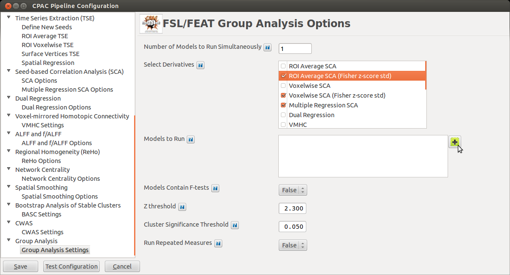
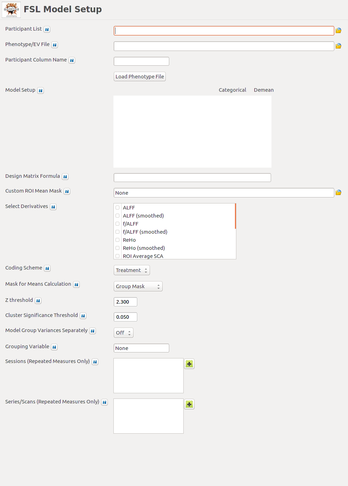
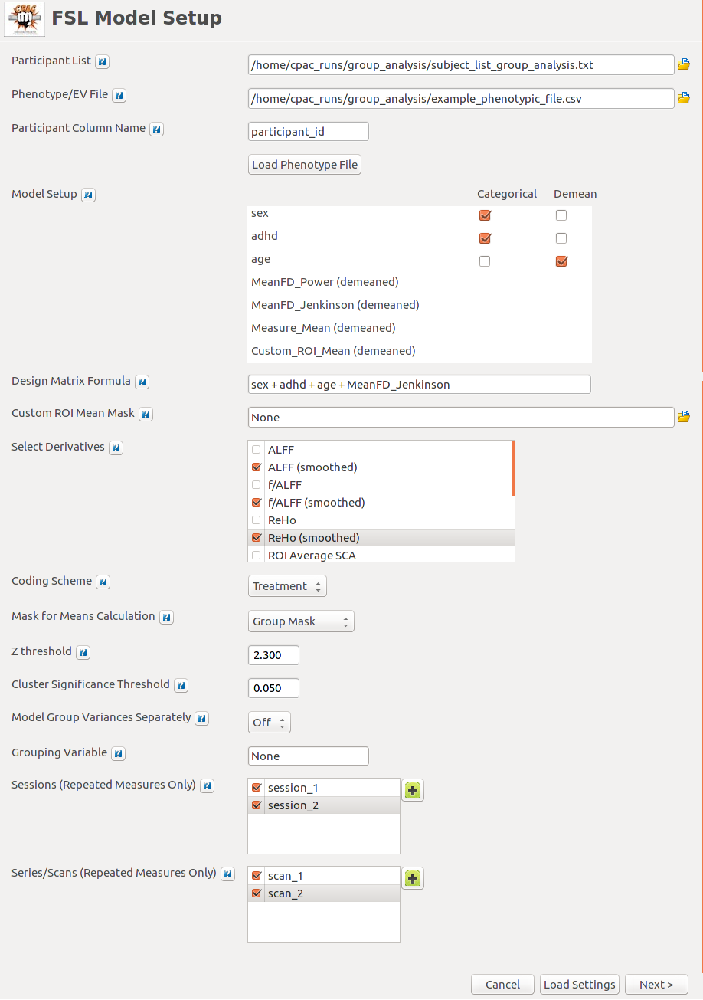
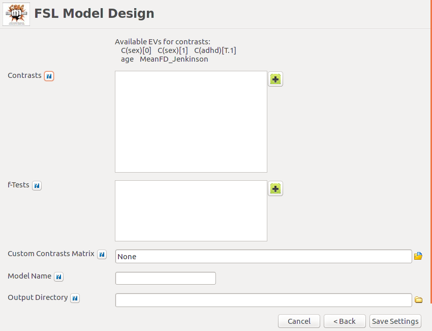
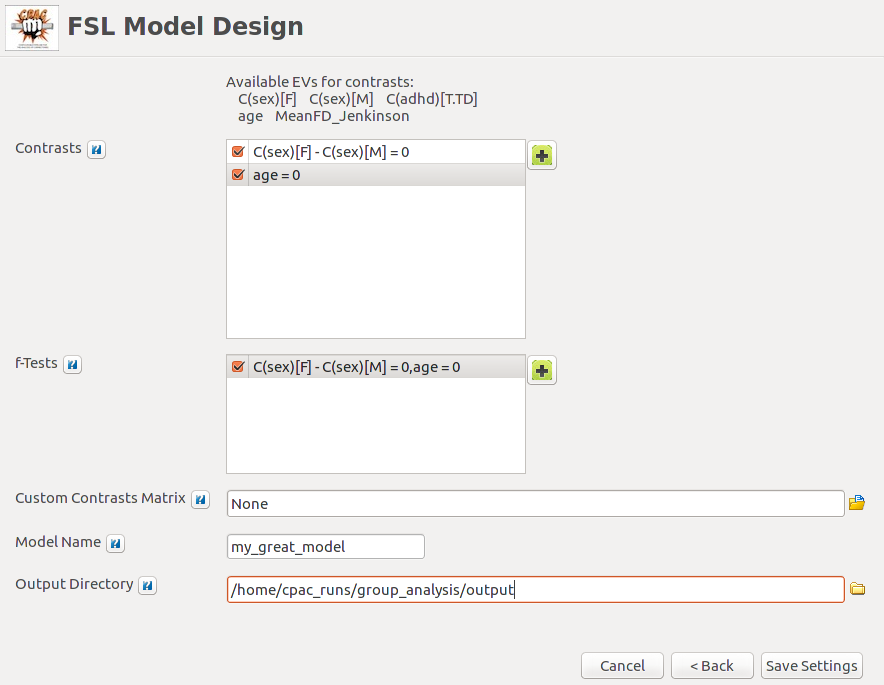
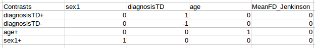
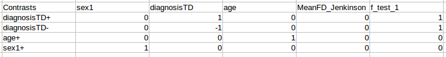

Overview
C-PAC uses FSL/FEAT to compare findings across groups.
You can construct models using a subject list and a phenotype file, select derivatives to be predicted by the model, and define contrasts between conditions using either the GUI or a custom csv file. Then FSL/FEAT will run a second-level General Linear Model (GLM) for you.
The following links provide an introduction to how groups are compared using FSL, as well as how to define contrasts:
Configuring CPAC to Run FSL Group Analysis

- Number of Models to Run Simultaneously - [integer]: This number depends on computing resources. Choose how many models to run at the same time (parallelization).
- Models to Run - [checkboxes]: Use the + to add FSL Models to be run (or to create new models).
Specifying Models to Run

- Subject List - [path]: Full path to a list of subjects to be included in the model. This should be a text file with one subject per line. A list in this format containing all subjects run through CPAC was generated along with the main CPAC subject list (see subject_list_group_analysis.txt). Another easy way to manually create this file is to copy the subjects column from your Regressor/EV spreadsheet.
- Phenotype/EV File -[path]: Full path to a .csv file containing EV information for each subject. Tip: A file in this format (containing a single column listing all subjects run through CPAC) was generated along with the main CPAC subject list (see template_phenotypic.csv).
- Subjects Column Name [text]: Name of the subjects column in your EV file.
- Model Setup - [checkboxes]: A list of EVs from your phenotype file will populate in this window. From here, you can select whether the EVs should be treated as categorical or if they should be demeaned (continuous/non-categorical EVs only). ‘MeanFD’ and ‘Measure Mean’ will also appear in this window automatically as options to be used as regressors that can be included in your model design. Note that the MeanFD and mean of measure values are automatically calculated and supplied by C-PAC via individual-level analysis. Also, MeanFD and mean of measure values are automatically demeaned prior to being inserted into the group analysis model.
- Design Matrix Formula - [Patsy formula]: Specify the formula to describe your model design. Essentially, including EVs in this formula inserts them into the model. The most basic format to include each EV you select would be ‘EV + EV + EV + ..’, etc. You can also select to include MeanFD and Measure_Mean here. Note that this design formula is pre-generated for the user depending on the EVs in the phenotype file, but can be edited at any time. C-PAC uses the Python library Patsy to generate the design matrices, so more information on how to format your design formula for specific designs can be found here- Patsy formula documentation. If you have used R in the past, Patsy’s formula syntax should be familiar.
- Measure Mean Generation (optional) - [Group Mask, Individual Mask]: C-PAC can add the average voxel intensity for a derivative as an EV in the model. If this average voxel intensity is present in the model, this menu allows you to select either a group-level or individual-level mask. Otherwise, this menu can be ignored.
- Custom ROI Mean Mask (optional) - [path]: Use a binarized mask with one or more ROIs to add averages for those ROIs to the model as EVs. Mask file must be in NifTI format.
- Use z-score Standardized Derivatives - [True, False]: Run model on a z-score standardized version of individual-level outputs or the raw versions.
- Select Derivatives - [checkboxes]: Select which derivatives you would like to include when running group analysis. When including Dual Regression, make sure to correct your P-value for the number of maps you are comparing. When including Multiple Regression SCA, you must have more degrees of freedom (subjects) than there were time series.
- Coding Scheme - [Treatment, Sum]: Select the encoding for your design matrix. For more details, see Patsy’s pages on Treatment and Sum coding.
- Model Group Variances Separately - [Off, On]: Specify whether FSL should model the variance for each group separately. If this option is enabled, you must specify a grouping variable below.
- Grouping Variable - [text]: The name of the EV that should be used to group subjects when modeling variances. If you do not wish to model group variances separately, set this value to None.
- Run Repeated Measures - [False, True]: Run repeated measures to build within-subject models or compare different scans (must use the group analysis subject list and phenotypic file formatted for repeated measures - these are generated when you create your subject list; these files will have ‘repeated_measures’ in their filenames).
- Z Threshold - [decimal]: Only voxels with a Z-score higher than this value will be considered significant.
- Cluster Significance Threshold - [decimal]: Significance threshold (P-value) to use when doing cluster correction for multiple comparisons.
Upon populating these fields and clicking Load Phenotype File, your model builder will look something like this:

Upon making your selections and clicking Next, you will be able to define contrasts.
Specifying Contrasts

- Contrasts - [checkboxes]: Specify your contrasts in this box. When the model builder builds the design matrix, it will process the categorical variables appropriately and provide the names of the different levels available as contrast labels, listed under ‘Available Contrasts’. When you are done specifying contrasts check the contrasts you wish to run. The contrast operators available include:
- > Greater than
- + Positive
- - Negative
f-Tests - [checkboxes]: Define an f-test by selecting two or more contrasts to include. When you are done, select the f-tests that you wish to run.
Custom Contrasts Matrix - [path]: Define contrasts using a custom CSV file. Instructions for constructing a csv may be found below. Note that if you choose to use a custom CSV, any of the options specified in the ‘Contrasts’ and ‘f-Tests’ boxes will be ignored.
Model Name - [text]: Specify a name for the new model.
Output Directory - [path]: Full path to the directory where CPAC should place the model files (.mat, .con, .grp) and the outputs of group analysis.
When you are done, the contrast screen should look like this:

Click Save Settings and place your model specification within an appropriate directory. You are now able to reload it for future use.
Creating a Custom CSV File

A custom contrasts csv can be used to define contrasts manually rather than using the graphical model builder. When you create a custom contrasts csv, fill the first cell of the first row with the label ‘Contrasts’, followed by labels for each of the EVs you wish to use. The first column should be filled with labels for the contrasts that you can define - these do not have to follow any particular convention, and can be whatever works best for your experiment. The remainder of the cells can be populated with contrast weights according to your needs.
If you would like to add f-tests, add each f-test as a column to the csv and the assign weights to each contrast to be included in the f-test.
